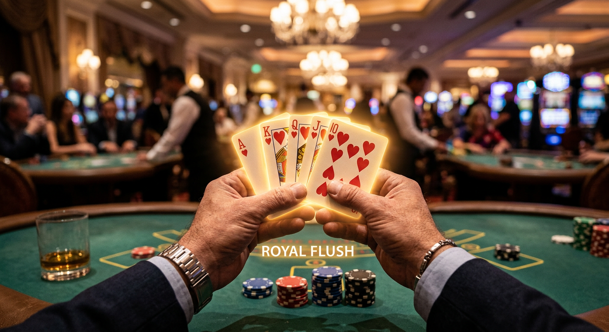
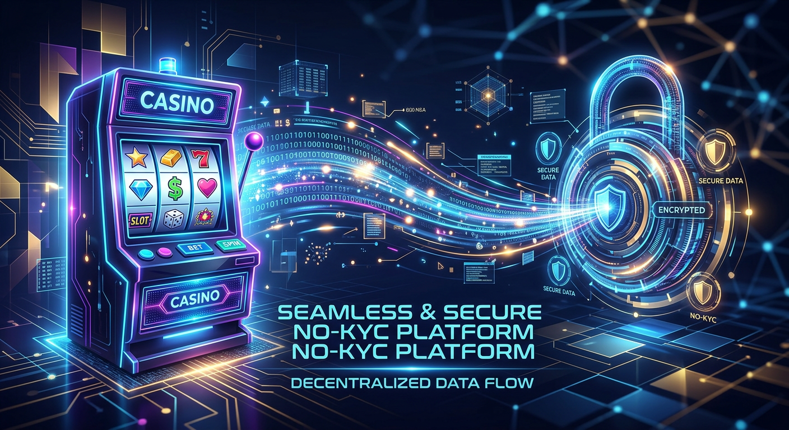
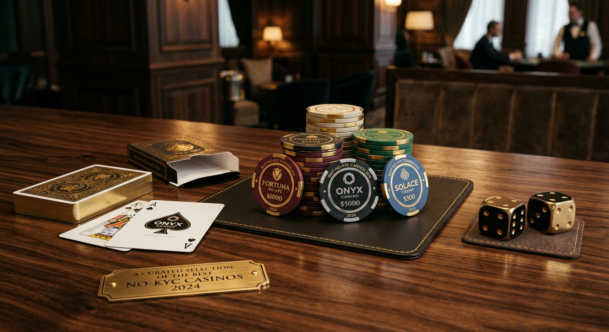
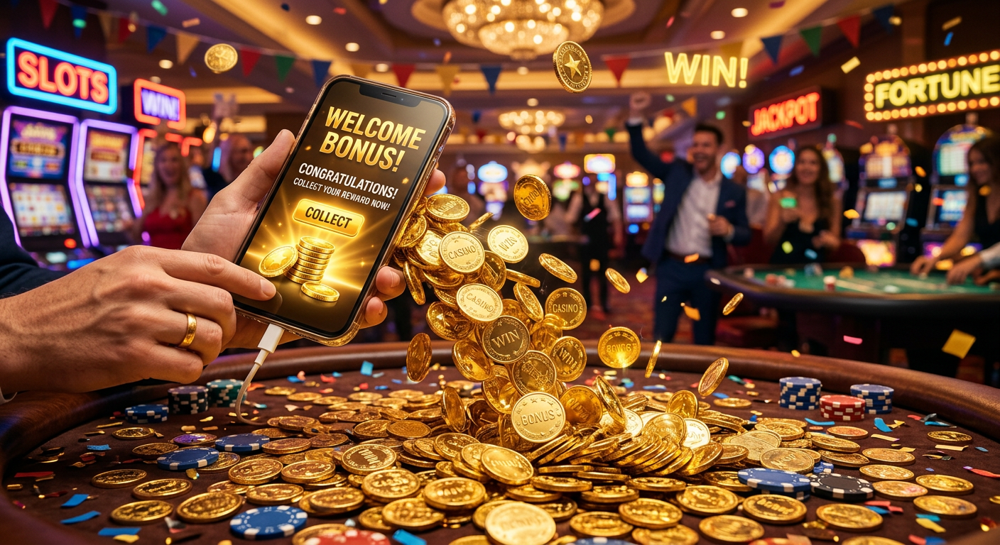

Casino senza documenti: Guida ai siti con registrazione immediata e senza invio ID
Nel panorama del gioco d'azzardo digitale contemporaneo, l'esigenza di rapidità e riservatezza ha portato alla nascita di una nuova categoria di piattaforme: il casino senza documenti. Questi portali rappresentano l'evoluzione diretta dell'industria del gaming, dove la burocrazia viene ridotta al minimo per permettere ai giocatori di accedere alle proprie slot preferite in pochi secondi. Molti utenti italiani, stanchi delle lunghe attese per la convalida dei conti gioco, stanno migrando verso queste soluzioni che garantiscono un accesso immediato.
L'industria del gioco d'azzardo in Italia è storicamente legata a regolamentazioni molto rigide, ma l'avvento delle licenze internazionali e della tecnologia blockchain ha cambiato le regole del gioco. Un casino senza documenti non è semplicemente un sito che ignora le regole, ma un operatore che sfrutta metodi di verifica alternativi e tecnologicamente avanzati. In questa guida esploreremo ogni aspetto di questo fenomeno, analizzando i vantaggi, i rischi e le migliori piattaforme disponibili oggi.
Giocare in un ambiente sicuro senza dover condividere scansioni della carta d'identità o bollette per la prova di residenza è diventato un requisito fondamentale per molti. Per chi cerca un'esperienza di gioco fluida, comprendere come operano questi siti è il primo passo per una sessione di intrattenimento senza intoppi. Scopriremo come i processi di Know Your Customer (KYC) stiano diventando sempre più invisibili grazie a sistemi di pagamento intelligenti.
Cosa si intende per siti di gioco senza verifica?
Quando parliamo di un casino senza documenti, ci riferiamo a piattaforme che consentono di depositare, giocare e, in molti casi, prelevare le vincite senza richiedere l'invio manuale di documenti di identità in fase di registrazione. Tradizionalmente, i portali con licenza ADM (ex AAMS) richiedono il caricamento di un documento entro 30 giorni dall'apertura del conto, pena la sospensione dello stesso. Al contrario, le piattaforme internazionali operano con una filosofia diversa.
Esistono principalmente due tipologie di gioco senza verifica documentale. La prima si basa sul sistema Pay N Play, dove l'identità viene confermata attraverso le credenziali bancarie. La seconda tipologia riguarda i cripto-casinò, dove l'anonimato è garantito dalla natura stessa della blockchain. In entrambi i casi, l'obiettivo è eliminare le lungaggini delle procedure di verifica che spesso scoraggiano i nuovi iscritti.
È importante notare che "senza documenti" non significa "senza regole". Questi operatori devono comunque rispettare le normative internazionali contro il riciclaggio di denaro, ma lo fanno in modo meno invasivo per l'utente finale. Utilizzando un casino senza documenti, il giocatore mantiene un controllo maggiore sulla propria privacy, evitando di lasciare copie di documenti sensibili su server di terze parti per periodi prolungati.
I vantaggi di scegliere un casino senza documenti

Scegliere di registrarsi su un casino senza documenti offre una serie di benefici tangibili che vanno oltre la semplice pigrizia burocratica. Il primo grande vantaggio è la rapidità. In un mondo dove tutto è istantaneo, attendere 48 o 72 ore per la verifica di un conto gioco sembra anacronistico. Qui, la registrazione e l'attivazione sono pressoché contestuali, permettendo di testare i software immediatamente.
Un altro punto di forza risiede nella gestione delle promozioni. Spesso, nei siti tradizionali, non è possibile prelevare i bonus finché il documento non è stato validato. In un casino senza documenti, questa restrizione scompare, rendendo l'intera gestione del bankroll molto più agile. Inoltre, la varietà di giochi è spesso superiore, includendo titoli di provider emergenti che prediligono il mercato internazionale.
Privacy e protezione dei dati personali
La privacy è il pilastro su cui si fonda il successo di ogni casino senza documenti. In un'epoca caratterizzata da continui data breach e furti d'identità, molti giocatori preferiscono non condividere dati sensibili come il codice fiscale o la foto del passaporto. Ridurre la quantità di informazioni personali condivise online diminuisce drasticamente il rischio di esposizione a cyber-attacchi.
Queste piattaforme utilizzano sistemi di crittografia avanzati per proteggere le transazioni finanziarie, ma non archiviano documenti cartacei digitalizzati. Questo significa che, anche nell'eventualità remota di una falla nel sistema, i dati critici degli utenti non sono presenti nei database del casinò. Per chi tiene alla propria riservatezza, questa è la soluzione ideale per godersi il gioco senza preoccupazioni costanti sulla sicurezza dell'identità.
Velocità di iscrizione e prelievi istantanei
Il tempo è la risorsa più preziosa per un giocatore. Un casino senza documenti eccelle proprio nell'ottimizzazione dei tempi tecnici. Mentre nei siti classici i prelievi possono essere bloccati per "ulteriori verifiche", in queste piattaforme il prelievo è spesso automatico. Grazie all'assenza di procedure di controllo manuale, i fondi possono essere trasferiti sul portafoglio elettronico o sul wallet crypto in pochi minuti.
Siti come Millioner e Kinbet hanno fatto della velocità il loro cavallo di battaglia, attirando migliaia di utenti che desiderano incassare le proprie vincite in tempo reale. L'assenza di scartoffie si traduce in un flusso di cassa più fluido tra il giocatore e la piattaforma, eliminando lo stress da attesa che spesso rovina l'esperienza di gioco complessiva.
Come funzionano le piattaforme No-KYC?

Il funzionamento di un casino senza documenti si basa su tecnologie che spostano l'onere della verifica dal casinò al fornitore di servizi finanziari. Invece di richiedere all'utente di provare chi sia, il casinò "si fida" delle informazioni già verificate dalla banca o dal wallet utilizzato per il deposito. Questo approccio è noto come "No-KYC" (No Know Your Customer) dal punto di vista dell'interfaccia utente, sebbene dietro le quinte avvengano controlli automatizzati.
Molte di queste piattaforme operano con licenze di Curacao o altre giurisdizioni internazionali che permettono una maggiore flessibilità rispetto alla licenza ADM italiana. Questo non implica una mancanza di serietà, ma una diversa filosofia normativa che favorisce la libertà dell'utente. Il software del casinò riconosce l'ID univoco della transazione e associa ad esso un account temporaneo o permanente, senza bisogno di dati anagrafici espliciti.
La tecnologia Pay N Play di Trustly
Una delle innovazioni più significative per il settore è stata introdotta da Trustly con il suo protocollo Pay N Play. Questo sistema permette di creare un account gioco nel momento stesso in cui si effettua il primo deposito tramite bonifico bancario istantaneo. Il casino senza documenti riceve dalla banca i dati minimi necessari per soddisfare le normative legali, sollevando l'utente dall'invio manuale di foto e file.
Utilizzare Pay N Play significa che non c'è bisogno di una username o di una password tradizionale. L'accesso avviene tramite l'autenticazione della propria banca, garantendo un livello di sicurezza pari a quello dei servizi bancari online. Molti operatori come 888Casino e WinBet hanno iniziato a guardare a queste tecnologie, sebbene le restrizioni italiane ne limitino ancora l'applicazione massiva rispetto ai siti internazionali.
Il ruolo delle criptovalute nell'anonimato
Le criptovalute come il Bitcoin sono il vero motore dei casino senza documenti di nuova generazione. Poiché le transazioni su blockchain sono pseudo-anonime, non c'è una connessione diretta tra un indirizzo wallet e un'identità fisica che il casinò debba necessariamente verificare per elaborare un pagamento. Questo ha permesso la nascita di piattaforme "Pure Crypto" dove basta un'email per iniziare.
Oltre al Bitcoin, l'uso di stablecoin come USDT o di valute veloci come Ethereum e Litecoin permette di gestire il gioco senza dover passare per il sistema bancario tradizionale. Questo è particolarmente apprezzato da chi desidera mantenere le proprie abitudini di spesa separate dal conto corrente principale, evitando che transazioni verso siti di gioco appaiano negli estratti conto bancari.
Migliori casino senza documenti del 2024: La nostra selezione

Individuare il miglior casino senza documenti richiede un'analisi attenta di diversi fattori, dalla varietà del catalogo alla velocità dei pagamenti. Sulla base dei nostri test indipendenti e del feedback della community, abbiamo selezionato alcuni operatori che si distinguono per affidabilità e assenza di burocrazia. Queste piattaforme offrono un'esperienza utente eccellente e rispettano i più alti standard di sicurezza digitale.
Ecco una tabella comparativa dei top brand consigliati:
| Brand | Vantaggio Principale | Bonus di Benvenuto | Link Sicuro |
|---|---|---|---|
| Millioner | Prelievi Crypto Istantanei | 100% fino a 500€ + 200 Giri Gratis | Visita Millioner |
| Roulettino | Interfaccia Mobile Top | Bonus Cashback 20% | Visita Roulettino |
| Wyns | Vasta gamma di Slot | Fino a 1000€ in 3 depositi | Visita Wyns |
| Kinbet | Scommesse + Casino | Bonus Sport e Casino No-KYC | Visita Kinbet |
| Dragonia | Programma VIP Esclusivo | Giri Gratis ogni settimana | Visita Dragonia |
Oltre a questi, meritano una menzione speciale per la loro interfaccia innovativa e la gestione snella delle procedure di iscrizione brand come Wildtokyo Casinò e Astromania Casinò. Entrambi offrono cataloghi con migliaia di titoli e un supporto clienti attivo 24/7. Anche Diva Spin Casinò e Lunubet Casinò si sono dimostrati solidi nei pagamenti, confermandosi ottime alternative ai circuiti tradizionali.
Per chi cerca ancora più varietà, piattaforme come Spinempire Casinò e Boomerangbet Casino offrono un'integrazione perfetta tra giochi da tavolo e live casino. Non dimentichiamo inoltre VegasHero Casinò e Wonderluck Casinò, famosi per la generosità dei loro bonus periodici che non richiedono complicate validazioni iniziali per essere riscattati.
Parametri per valutare la sicurezza di un operatore
Sebbene l'idea di un casino senza documenti possa sembrare meno sicura a un occhio inesperto, la realtà è che questi siti investono massicciamente in protezione tecnologica. Per valutare la bontà di un operatore, bisogna guardare alla licenza di gioco. Una licenza rilasciata dalla Gaming Curacao o dalla MGA (Malta Gaming Authority) è un indicatore di legalità e correttezza dei giochi (RNG certificato).
Un altro parametro fondamentale è la presenza di protocolli SSL a 128 o 256 bit, che criptano ogni comunicazione tra il browser dell'utente e il server. Inoltre, la reputazione online gioca un ruolo chiave: leggere le recensioni su forum indipendenti aiuta a capire se il gioco senza problemi è la norma o l'eccezione. Un operatore serio offre sempre strumenti di auto-esclusione e limiti di deposito, promuovendo il gioco responsabile nonostante l'assenza di burocrazia identificativa.
Bonus di benvenuto disponibili senza convalida immediata

Uno degli aspetti più allettanti di un casino senza documenti è la possibilità di attivare immediatamente il bonus di benvenuto. Nei siti tradizionali, spesso il bonus rimane "congelato" finché non invii la carta d'identità. Qui, invece, basta il deposito per vedere il saldo raddoppiato o per ricevere i primi pacchetti di giri gratuiti. Questo permette di iniziare l'esperienza di gioco con una spinta considerevole sin dal primo minuto.
Molti di questi bonus includono anche il cosiddetto Bonus Crab, una funzione gamificata molto popolare dove si possono vincere premi extra, giri gratis o bonus cash semplicemente partecipando a piccoli mini-giochi giornalieri. Portali come Kinbet e Dragonia utilizzano spesso il Bonus Crab per fidelizzare i propri utenti senza richiedere noiosi passaggi di verifica dell'identità.
Metodi di pagamento più utilizzati in questi portali
La spina dorsale di ogni casino senza documenti è il suo sistema di pagamenti. Per garantire l'assenza di scartoffie, questi siti si affidano a metodi che verificano l'utente in modo autonomo. Oltre al già citato Bitcoin e alle altre cripto, troviamo portafogli elettronici evoluti. Questi strumenti fungono da "scudo" tra il casinò e i tuoi dati bancari sensibili.
- Criptovalute: Bitcoin, Ethereum, Litecoin e Tether per il massimo anonimato.
- E-wallets: MiFinity, Jeton e Revolut sono tra i più diffusi.
- Sistemi Instant Bank: Trustly e Klarna per chi preferisce il bonifico istantaneo.
- Carte Prepagate: Paysafecard o Neosurf, ideali per chi non ha un conto corrente.
L'uso di questi metodi garantisce che la verifica dell'identità sia già stata fatta a monte dal provider di pagamento, permettendo al casinò di accettare la transazione in totale sicurezza legale. Questo è il segreto dietro la velocità dei casino online senza lunghi tempi di attesa per l'approvazione dei conti.
Aspetti legali e licenze internazionali
È bene chiarire che giocare su un casino senza documenti è una scelta libera del consumatore, ma è importante conoscere il contesto legale. In Italia, l'autorità garante è l'ADM (Agenzia delle Dogane e dei Monopoli). I siti senza questa licenza sono tecnicamente considerati "offshore". Tuttavia, molti di essi possiedono licenze internazionali valide che offrono tutele legali ai giocatori, sebbene non sotto l'egida diretta dello Stato italiano.
Molti utenti preferiscono questi siti perché non richiedono l'uso dello SPID o l'invio di documenti fisici, procedure che sono diventate obbligatorie per molti siti ADM. Piattaforme internazionali come Winamax o 888Casino operano in diversi mercati con licenze multiple, adattando la loro richiesta di documenti in base alla giurisdizione. I casino senza documenti "puri" scelgono invece giurisdizioni che permettono il modello Pay N Play o Crypto-only, garantendo un quadro legale chiaro per l'operatore e flessibilità per l'utente.
Giri Gratis senza documenti
I giri gratuiti (o free spins) sono la promozione più ricercata in un casino senza documenti. Spesso, queste piattaforme offrono pacchetti generosi di spin sulle slot più popolari come "Book of Dead" o "Gates of Olympus" senza richiedere altro che la creazione di un account rapido. Ricevere giri gratuiti senza dover attendere la convalida del documento è un vantaggio enorme per chi vuole testare la volatilità di una slot senza rischi immediati.
Ad esempio, siti come Wildtokyo Casinò e Astromania Casinò offrono spesso promozioni ricorrenti dove i giri gratuiti vengono accreditati automaticamente ogni fine settimana. Questa politica di bonus "senza attrito" è ciò che differenzia maggiormente un casino senza documenti dai competitor tradizionali come WinBet, dove le procedure possono essere più farraginose.
Perché molti utenti italiani evitano la verifica dell'identità
Ci sono diverse ragioni per cui il pubblico italiano sta preferendo il casino senza documenti. La prima è la diffidenza verso la gestione dei dati da parte delle grandi aziende. In un periodo in cui la burocrazia digitale sembra aumentare anziché diminuire, evitare l'invio di scansioni di documenti riduce la "superficie di attacco" per potenziali frodi. Inoltre, l'introduzione di sistemi complessi come lo SPID per il gioco online ha spinto molti verso soluzioni più immediate.
Un altro motivo è legato alla velocità del prelievo. Spesso, la scusa della verifica documentale viene usata da operatori poco seri per ritardare il pagamento delle vincite. Scegliendo un casino senza documenti, questo rischio viene eliminato alla radice: se il sito non richiede documenti per depositare, non può improvvisamente richiederli per pagare, a meno di attività sospette segnalate dai sistemi anti-frode automatici.
Giocare senza scartoffie: l'esperienza di gioco moderna
Il concetto di "giocare senza scartoffie" definisce perfettamente la filosofia dei nuovi portali. L'esperienza di gioco moderna deve essere fluida, cross-platform e priva di interruzioni. Un casino senza documenti permette di passare dall'iscrizione al primo spin in meno di due minuti, spesso anche da mobile, senza dover cercare una stampante o uno scanner per inviare file.
Questo approccio "snello" si riflette anche nel design delle piattaforme. Siti come Dragonia o Millioner presentano interfacce pulite, dove tutto è a portata di click. L'assenza di moduli infiniti da compilare rende il gioco senza stress una realtà quotidiana per migliaia di appassionati che cercano solo un po' di sano divertimento senza dover fornire l'albero genealogico.
Rischi e considerazioni per il gioco responsabile
Nonostante i numerosi vantaggi, giocare in un casino senza documenti richiede una maggiore responsabilità personale. L'anonimato e la facilità di deposito possono essere un'arma a doppio taglio per chi ha difficoltà a gestire i propri limiti. Poiché la verifica dell'età non è sempre rigorosa come nei siti ADM, è fondamentale che l'utente sia maggiorenne e consapevole dei rischi legati al gioco d'azzardo.
Si consiglia di stabilire sempre un budget predefinito e di non inseguire mai le perdite. Molti casino online senza KYC offrono comunque link a organizzazioni come Gambling Therapy o siti governativi per il supporto contro la ludopatia. Ricorda che il gioco senza controllo cessa di essere divertimento. La sicurezza in un casino senza documenti passa anche dalla tua capacità di auto-regolamentazione.
📌 Consiglio di Luca Moretti, il nostro scrittore esperto:
"Lavoro nel settore dell'iGaming da oltre dieci anni e ho visto l'evoluzione tecnologica dei sistemi di sicurezza. Il mio consiglio per chi approccia un casino senza documenti è di non farsi abbagliare solo dai bonus enormi. Controllate sempre la rapidità del supporto chat: un casinò che risponde in 30 secondi è solitamente un casinò che paga velocemente. Se scegliete di usare criptovalute, assicuratevi di inviare i fondi sulla rete corretta (ad esempio ERC-20 o TRC-20) per evitare di perdere i vostri asset. Infine, provate sempre il sito con un deposito minimo prima di impegnare cifre importanti."
Conclusioni sulla scelta dei siti senza burocrazia
In conclusione, il casino senza documenti rappresenta una validissima alternativa per chi cerca privacy, velocità e un'ampia scelta di giochi. Grazie a tecnologie come il Pay N Play e le criptovalute, oggi è possibile godersi un'esperienza di gioco di alto livello senza i vincoli della burocrazia tradizionale. Piattaforme come Millioner, Roulettino e Kinbet stanno tracciando la strada per il futuro dell'industria.
Che tu sia un amante delle slot o un esperto di tavoli live, scegliere un casino senza documenti ti permette di concentrarti su ciò che conta davvero: il divertimento. Ricorda sempre di verificare la licenza dell'operatore e di giocare in modo responsabile, sfruttando i vantaggi dell'anonimato per proteggere la tua identità digitale nel vasto mondo del web.
Domande Frequenti (FAQ)
È legale giocare in un casino senza documenti in Italia?
I giocatori italiani possono accedere a questi siti, ma devono essere consapevoli che operano con licenze internazionali diverse da quella ADM. È una scelta personale che comporta l'assenza della protezione diretta dello Stato italiano, ma offre maggiori vantaggi in termini di privacy e velocità.
Posso davvero prelevare senza inviare la carta d'identità?
Sì, nei casino senza documenti che utilizzano criptovalute o sistemi come Trustly, il prelievo viene elaborato senza richiesta di file ID, poiché la tua identità è già confermata dal metodo di pagamento utilizzato.
Quali sono i migliori siti no-KYC consigliati?
Tra i più affidabili segnaliamo Millioner, Kinbet, Wyns e Dragonia. Anche brand come Wildtokyo Casinò e Boomerangbet Casino offrono eccellenti garanzie di rapidità e sicurezza.
I bonus sono reali in questi casinò?
Assolutamente sì. Anzi, spesso i bonus in un casino senza documenti sono più alti rispetto ai siti tradizionali. Potrai trovare offerte come il Bonus Crab, giri gratuiti e bonus sul deposito immediatamente disponibili.
Cosa succede se un sito mi chiede i documenti al momento del prelievo?
In rari casi, se il sistema anti-frode rileva anomalie (come un accesso da un IP sospetto o un deposito molto elevato), anche un casino senza documenti potrebbe richiedere una verifica una tantum per conformarsi alle leggi anti-riciclaggio. Tuttavia, questo accade molto meno frequentemente rispetto ai siti standard.